मेंडल द्वारा प्रयोगों के लिए मटर के पौधे चुनने से क्या लाभ हुए?
मटर के पौधों को चुनने से निम्नलिखित लाभ हुए-
(i) मटर का पौधा वार्षिक होता है।
इसे पूरे वर्ष उगाया जा सकता है।
अत: इसकी अनेक पीढ़ियों का अध्ययन सुगमता से किया जा सकता है।
(ii) इसके पुष्प उभयलिंगी (bisexual) होते हैं।
पुष्प की संरचना इस प्रकार की होती है कि इसमें प्राकृतिक रूप से स्वपरागण होता है लेकिन आसानी से परपरागण कराया जा सकता है।
(iii) समयुग्मजी पौधों में शुद्ध लक्षण पीढ़ी-दर-पीढ़ी बने रहते हैं।
(iv) कृत्रिम परपरागण द्वारा बड़ी संख्या में बने संकर (hybrid) पौधे जननक्षम (fertile) होते हैं।
(v) मटर में अनेक लक्षणों के वैकल्पिक विपर्यासी रूप (alternate forms) उपस्थित थे।
जैसे फूल का रंग-बैंगनी या सफेद पौधे की लम्बाई-लम्बा पौधा या बौना पौधा।
निम्न में भेद करो -
प्रभाविता और अप्रभाविता
(Dominance & Recessiveness)
| प्रभाविता | अप्रभाविता |
|---|---|
| वह लक्षण (विभेदक) या ऐलील जो विषमयुग्मजी अवस्था में अभिव्यक्त हो जाते हैं प्रभावी विभेदक व यह घटना प्रभाविता कहलाती है। | वह विभेदक या ऐलील जो विषमयुग्मजी अवस्था में अभिव्यक्त नहीं होतें, अप्रभावी विशेषक कहलाते हैं। यह घटना अप्रभाविता कहलाती है। |
| इसका कारण इसके ऐलील द्वारा पूर्ण कार्यशील एन्जाइम का उत्पादन है। | ऐलील में हुए उत्परिवर्तन से अकार्यशील एन्जाइम बनता है या एन्जाइम बनता ही नहीं |
समयुग्मजी और विषमयुग्मजी
(Homozygous and Heterozygous)
ऐसे पौधों के सभी युग्मक एक जैसे होते हैं; जैसे-TT, tt।
ये उस लक्षण के लिए शुद्ध होते हैं।
ऐसे पौधों से दो प्रकार के युग्मक बनते हैं; जैसे Tt।
ये उस लक्षण के लिए शुद्ध नहीं होते, इन्हें संकर कहते हैं।
विषमयुग्मजी पौधे उस लक्षण के लिए संकर (hybrid) होते हैं।
एकसंकर और द्विसंकर।
(Monohybrid and Dihybrid)
प्रथम पीढ़ी प्रभावी लक्षण को प्रदर्शित करती है।
प्रथम पीढ़ी की सन्तति में स्वपरागण कराने पर द्वितीय या F2 पीढ़ी में पौधे 3: 1 के फीनोटिपिक अनुपात (phenotypic ratio) में प्राप्त होते हैं।
एक ही जीन के कारण सहलग्नता नहीं पायी जाती।
F1 पीढ़ी के पौधे प्रभावी लक्षणों को प्रदर्शित करते हैं, F1 पीढ़ी के पौधों में स्वपरागण कराने पर F2 पीढ़ी में पौधे 9: 3: 3: 1 के फीनोटिपिक अनुपात में प्राप्त होते हैं।
यह सहलग्नता प्रदर्शित कर सकते हैं।
कोई द्विगुणित जीन 6 स्थलों के लिए विषमयुग्मजी हैं, कितने प्रकार के युग्मकों का उत्पादन संभव है?
इसका जीनोटाइप AABBCC होगा।
अत: आठ प्रकार के युग्मक बनेंगे।
ABC, ABc, AbC, Abc, aBC, abC, aBc, abc.
एकसंकर क्रॉस का प्रयोग करते हुए, प्रभाविता नियम की व्याख्या करो।
जब मेण्डल एक समय पर केवल एक तुलनात्मक लक्षण को ध्यान में रखकर प्रयोग करते थे, तो उसे एकसंकर क्रॉस (monohybrid cross) कहते हैं।
इसमें एक जीन के दो वैकल्पिक रूपों की वंशागति का अध्ययन किया जाता है।
(1) मेण्डल ने मटर के शुद्ध लम्बे और शुद्ध बौने पौधे चुने।
इन्हें पैतृक या जनक पीढ़ी (parental generation) कहते हैं।
(2) मेण्डल ने इनके मध्य संकरण (hybridisation or cross breeding) कराया।
इससे बने बीज अंकुरित होने पर संकर लम्बे (hybrid tall) पौधे मिलते हैं।
इसे F1 पीढ़ी या प्रथम सन्तानीय पीढ़ी कहते हैं।
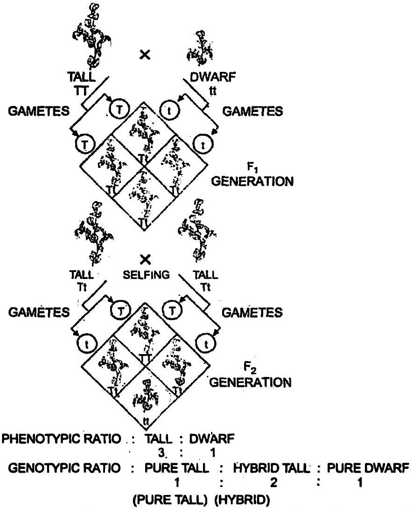
इससे बने बीज बोने पर F2 पीढ़ी या द्वितीय सन्तानीय पीढ़ी में लम्बे और बौने पौधे 3: 1 के अनुपात में मिलते हैं।
यही अनुपात अन्य तुलनात्मक लक्षणों वाले पौधों के मध्य क्रॉस कराने पर भी मिलता है।
उसे प्रभावी लक्षण (dominant trait) कहते हैं।
यही प्रभाविता का नियम है।
परीक्षार्थ संकरण की परिभाषा लिखो और चित्र बनाओ।
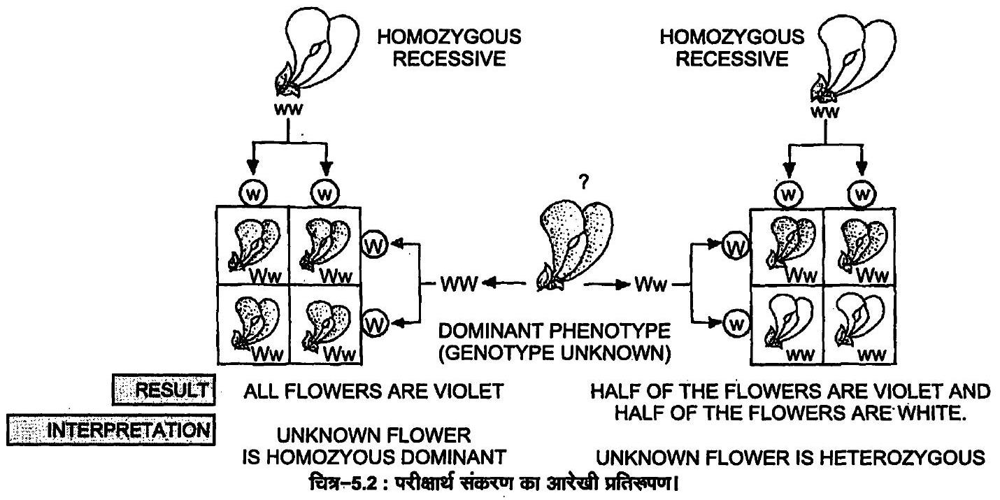
जैसे F1 या F2 के लम्बे पौधों का जीनोटाइप TT है या Tt है, यह बाहर से देखकर ज्ञात नहीं हो सकता।
जब किसी जीव के किसी लक्षण का जीनोटाइप ज्ञात करना होता है, तब उस जीव का संकरण अप्रभावी लक्षण वाले शुद्ध जनक से कराया जाता है।
ऐसे संकरण (क्रॉस) को परीक्षार्थ या परीक्षण संकरण (test cross) कहते हैं।
(i) सभी सन्तति प्रभावी लक्षण को प्रदर्शित करते हों, या
(ii) 50 % सन्तति प्रभावी लक्षण तथा 50 % सन्तति अप्रभावी लक्षण को प्रदर्शित करते हों।
उपर्युक्त परिणामों से निम्नलिखित निष्कर्ष निकाले जाते हैं-
(i) बैंगनी (W) रंग श्वेत रंग (w) के ऊपर प्रभावी होता है।
जब सभी F1 सदस्य प्रभावी लक्षण वाले प्राप्त होते हैं, तो अज्ञात जीनोटाइप समयुग्मकी प्रभावी लक्षण (बैंगनी रंग के पुष्प) यानी WW वाला था।
F1 पीढ़ी के सभी सदस्य विषमयुग्मकी होंगे, लेकिन फीनोटाइप प्रभावी लक्षण का ही होगा।
(ii) जब F1 पीढ़ी के 50 % सदस्य प्रभावी लक्षण वाले तथा 50 % सदस्य अप्रभावी लक्षण वाले हों, तो अज्ञात जीनोटाइप विपमयुग्मकी प्रभावी लक्षण (Ww) वाला था।
F1 पीढ़ी के आधे सदस्य विषमयुग्मकी प्रभावी लक्षण वाले तथा आधे सदस्य समयुग्मकी अप्रभावी लक्षण वाले होते हैं।
एक ही जीन स्थल वाले समयुग्मजी मादा और विषमयुग्मजी नर के संकरण से प्राप्त प्रथम संतति पीढ़ी के फीनोटाइप वितरण का पनेट वर्ग बनाकर प्रदर्शन करो।
एक ही जीन स्थल वाले गगयुग्मजी मादा (जैसे शुद्ध नाटे पौधे) और विषमयुग्मजी नर (जैसे संकर लम्बे पौधे) के मध्य संकरण कराया जाता है।
इससे प्राप्त प्रथम पुत्रीय सन्तति सदस्यों में 50 % प्रभावी लक्षण वाले विषमयुग्मजी और 50 % समयुग्मजी प्रभावी लक्षण वाले होते हैं; जैसे-
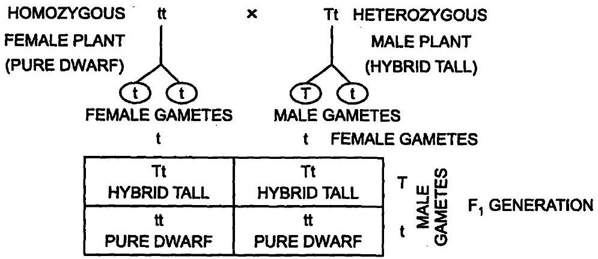
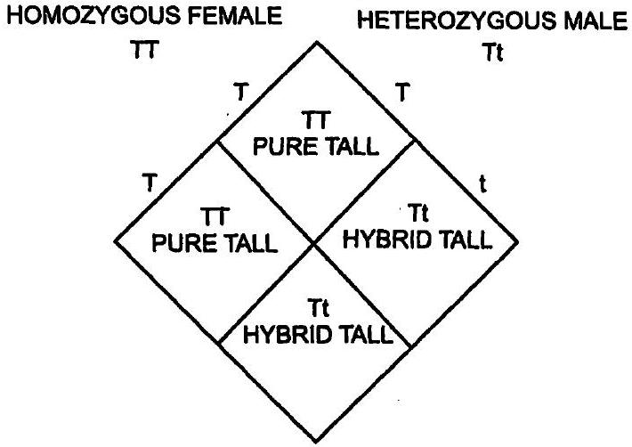
पीले बीज वाले लंबे पौधों (Yy Tt) का संकरण हरे बीज वाले लंबे (yy Tt) पौधे से करने पर निम्न में से किस प्रकार के फीनोटाइप संतति की आशा की जा सकती है
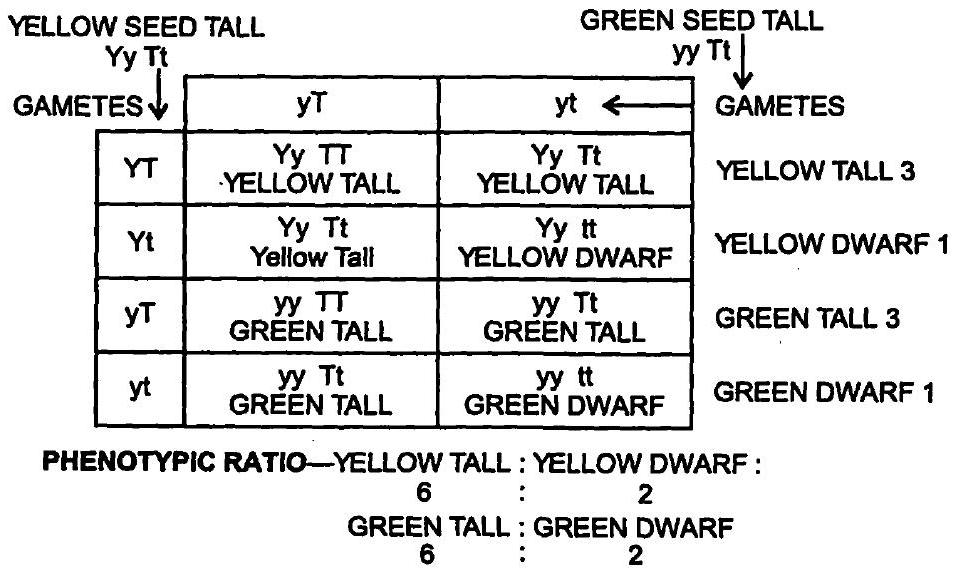
(क) लम्बे हरे 6
(ख) बौने हरे 2 = 3: 1
दो विषमयुग्मजी जनकों का क्रॉस σ और φ किया गया।
मान लें दो स्थल (loci) सहलग्न है, तो द्विसंकर क्रॉस में F1 पीढ़ी के फीनोटाइप के लक्षणों का वितरण क्या होगा?
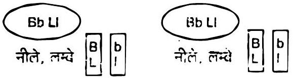
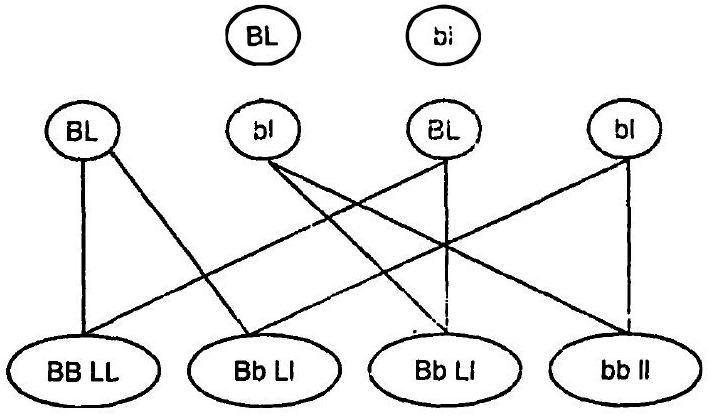
मीठी मटर (sweet pea) में फूल का नीला रंग (B) लाल रंग (b) पर प्रभावी है, इसी प्रकार लम्बा परागकण (L) गोल परागकण (l) पर प्रभावी है।
यह दों प्रकार के युग्मक बनाएँगे क्योंकि जीन सहलग्न हैं।
अनुपात 3: 1
जनकीय अनुपात 100%
पुनर्संयोजन अनुपात 0%
आनुवंशिकी में टी.
एच मौरगन के योगदान का संक्षेप में उल्लेख करें।
(1) मोर्गन ने ड्रोसोफिला में अनेक सहलग्नता समूहों (linkage groups) की खोज की।
(2) ड्रोसोफिला में सफेद आँख वाली महत्त्वपूर्ण मक्खी की खोज का श्रेय भी मोर्गन को जाता है।
(3) मोर्गन ने ड्रोसोफिला में अनेक एकसंकर व द्विसंकर परीक्षण किए।
(4) लिंग सहलग्न वंशागति सम्बन्धी हमारी समझ़ विकासित करने में भी मोगन का महत्त्रपूर्ण योगदान है।
(5) जीन मैपिंग (gene mapping) के सम्बन्ध में मोर्गन ने उत्लेखनीय कार्य किया।
(6) उन्हें आनुवंशिकी में क्रोमोसोम की भूमिका सम्बन्धी शोधकार्य हंतु सन् 1933 में नोबेल पुरस्कार प्रदान किया गया।
वंशावली विश्लेषण क्या है? यह विश्लेषण किस प्रकार उपयोगी है?
(Pedigree Analysis)
वंश आरेख या वंशवृक्ष के रूप में किसी आनुवंशिक विशेषक (trait) का दो या अधिक पीढ़ियों का अभिलेख वंशावली (pedigree) कहलाता है।
इसके विश्लेषण या अध्ययन को ही वंशावली विश्लेषण कहते हैं।
ये लक्षण मानव रोगों से जुड़े हो सकते हैं, या फिर बिना किसी विशेष महत्त्व के भी हो सकते हैं।
(i) चूँकि मनुष्य में नियंत्रित संकरण (control cross) सम्भव नहीं है, इसलिए आनुवंशिक विकारों का अध्ययन वंशावली विश्लेषण से किया जाता है।
(ii) किसी दम्पति को उनकी सन्तान में होने वाली असामान्यताओं के बारे में बताया जा सकता है।
(iii) इससे मनुष्य के लिंग सहलग्न रोगों के बारे में हमारी समझ बढ़ी है।
मानव में लिंग-निर्धारण कैसे होता है?
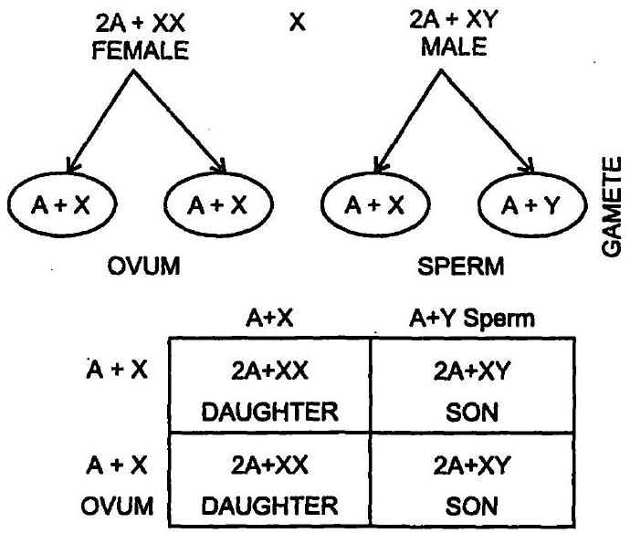
पुरुष में एक लैंगिक गुणसूत्र X होता है और दूसरा Y होता है।
स्त्री में अण्डजनन से बनने वाले सभी अण्डाणुओं में दैहिक गुणसूत्रों का एक अगुणित सैट और एक X लैंगिक गुणसूत्र होता है (A+X)।
इस तरह सभी अण्डाणु जीन संरचना (A+X) में एक समान होते हैं।
इसलिए स्त्री को समयुग्मकी लिंग (homogametic sex) कहते हैं।
इसके विपरीत, पुरुष में शुक्राणुजनन से बने 50 % शुक्राणुओं में से कुछ में दैहिक गुणसूत्रों का एक अगुणित सैट और X गुणसूत्र होता है, तथा कुछ शुक्राणुओं में दैहिक गुणसूत्रों का एक अगुणित सैट और Y गुणसूत्र (A+X or A+Y ) होता है।
इस तरह दो प्रकार के शुक्राणु बनते हैं - 50 % शुक्राणु A+X गुणसूत्र वाले होते हैं तथा 50 % शुक्राणु A+Y गुणसूत्र वाले होते हैं।
इसलिए पुरुष को विषमयुग्मकी लिंग (heterogametic sex) कहते हैं।
निषेचन के समय यदि A+Y शुक्राणु अण्डाणु के साथ मिलता है, तब नर सन्तान (पुत्र) पैदा होती है।
यदि अण्डाणु A+X शुक्राणु के साथ मिलता है, तब मादा सन्तान (पुत्री) पैदा होती है।
यह केवल संयोग है कि कौन-सा शुक्राणु अण्डाणु के साथ मिलता है।
इसी के आधार पर सन्तान का लिंग तय होता है।
शिशु का रुधिर वर्ग O है।
पिता का रुधिर वर्ग A और माता का B है।
जनकों के जीनोटाइप मालूम करें और अन्य संतति में प्रत्याशित जीनोटाइपों की जानकारी प्राप्त करें।
शिशु का रुधिर वर्ग O है।
इसलिए उसका जीनोटाइप केवल (ii) हो सकता है, कोई और नहीं।
शिशु को एक (i) ऐलील अपने पिता से मिला है और दूसरा (i) ऐलील अपनी माँ से मिला है।
इसलिए पिता और माता, दोनों को रक्त समूह A और B के लिए विषमयुग्मजी होना चाहिए, तभी वे शिशु को (i) ऐलील दे सकते थे।
इसलिए पिता का रक्त समूह IA i होना चाहिए और माता का IB i होना चाहिए।
| माता B ↓ IB i | IA | i | ← पिता A IA i |
|---|---|---|---|
| IB | IA IB | IB i | |
| i | IA i | ii |
निम्न शब्दों को उदाहरण समेत समझाएँ
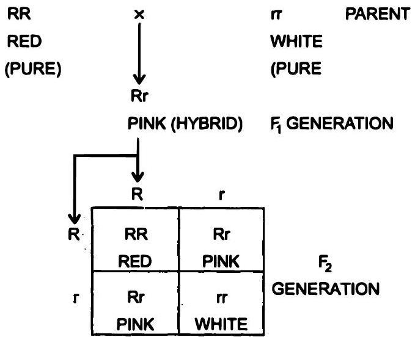
सह प्रभाविता
(Co-dominance)
वंशागति के उस प्रकार को सहप्रभाविता कहते हैं, जिसमें किसी विषमयुग्मजी (heterozygous) में दोनों ऐलील व्यक्त होते हैं।
मनुष्य में AB रक्त समूह इसका उदाहरण है।
यह बहुऐलील (multiple alleles) का भी उदाहरण है।
ऐलील IA से एण्टीजन A बनता है, तथा IB से एण्टीजन B बनता है।
i ऐलील कोई एण्टीजन नहीं बनाता।
ऐलील IA व IB दोनों सहप्रभावी हैं।
किसी मनुष्य में 3 में से 2 ऐलील हो सकते हैं।
जब ऐलील IA IB प्रकार के होते हैं, तब रक्त समूह AB होता है, जो सहप्रभाविता का उदाहरण है।
अपूर्ण प्रभाविता
कुछ पौधों में दो विपरीत लक्षणों में संकरण कराने पर F1 पीढ़ी में मध्यवर्ती लक्षण दिखता है।
इसका अर्थ है कि दो विपरीत लक्षणों में से कोई भी पूर्ण रूप से प्रभावी लक्षण (dominant character) नहीं होता।
दोनों लक्षण खुद को दिखाते हैं।
इस विशेषता को अपूर्ण प्रभाविता कहते हैं।
इसे कार्ल कोरेन्स (Carl Correns, 1903) ने खोजा था।
जब गुलाबाँस (4 o'clock) पौधों में एक लाल पुष्प वाले पौधे तथा एक सफेद पुष्प वाले पौधे में संकरण कराया जाता है, तब F1 पीढ़ी में गुलाबी पुष्प वाले पौधे बनते हैं।
जब F1 पीढ़ी के पौधों में स्वपरागण कराया जाता है, तब F2 पीढ़ी में लाल, गुलाबी व सफेद पुष्प वाले पौधे 1: 2: 1 के अनुपात में मिलते हैं।
अपूर्ण प्रभाविता में F2 पीढ़ी का जीनोटाइप अनुपात और फीनोटाइप अनुपात, दोनों 1: 2: 1 होते हैं।
इसी तरह जन्तुओं में भी यह देखा जाता है।
ऐन्डैलूसियन मुर्गों (andalusian fowl) में काले व सफेद रंग के पंखों वाले मुर्गे-मुर्गियों में संकरण कराने पर F1 पीढ़ी में नीले पंखों वाले चूजे बनते हैं।
F1 पीढ़ी की सन्तति के बीच संकरण कराने पर F2 पीढ़ी में काले, नीले व सफेद पंखों वाले चूजों का अनुपात 1: 2: 1 होता है।
बिंदु-उत्परिवर्तन क्या है? एक उदाहरण दें।
सिकेल सेल एनीमिया इसका एक उदाहरण है।
इसमें हीमोग्लोबिन की बीटा ग्लोबिन शृंखला बनाने वाली जीन के छठे कोडोन GAG के बीच का क्षारक (A) एडीनीन, (U) यूरेसिल द्वारा प्रतिस्थापित हो जाता है और GAG से GUG बन जाता है।
इससे ग्लूटेमिक अम्ल की जगह वेलीन कोडित होता है।
फलस्वरूप सामान्य हीमोग्लोबिन असामान्य हीमोग्लोबिन में बदल जाता है।
वंशागति के क्रोमोसोम वाद को किसने प्रस्तावित किया ?
किन्हीं दो अलिंग सूत्री आनुवंशिक विकारों का उनके लक्षणों सहित उल्लेख करो।
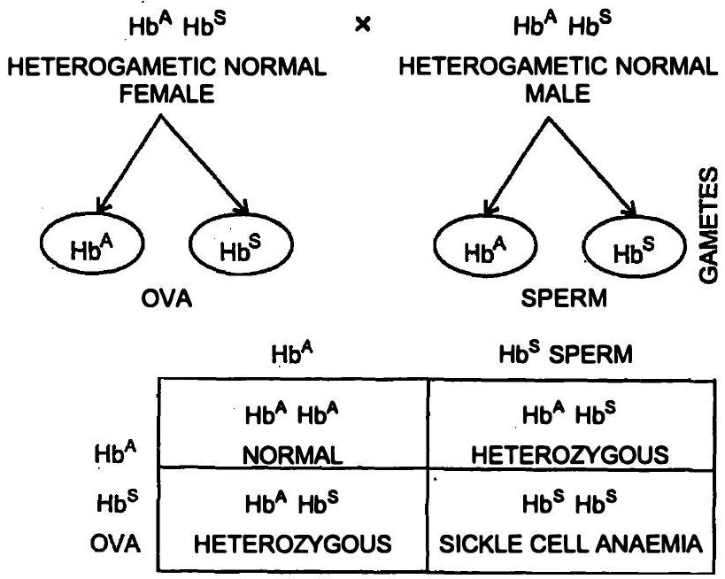
जब अप्रभावी जीन समयुग्मकी (HbS HbS) अवस्था में होती है, तब सामान्य हीमोग्लोबिन के बदले असामान्य हीमोग्लोबिन बनने लगता है।
अप्रभावी जीन के कारण हीमोग्लोबिन की बीटा शृंखला ( β-chain) में छठे स्थान पर ग्लूटेमिक अम्ल (glutamic acid) की जगह वेलीन (valine) ऐमीनो अम्ल आ जाता है।
असामान्य हीमोग्लोबिन ऑक्सीजन का वहन नहीं कर पाता तथा लाल रुधिराणु हँसिया के आकार के (sickle shaped) हो जाते हैं।
ऐसे व्यक्तियों में घातक रक्ताल्पता (anaemia) हो जाती है, जिससे व्यक्ति की मृत्यु हो जाती है।
विषमयुग्मकी व्यक्ति सामान्य होते हैं, किन्तु ऑक्सीजन का आंशिक दाब कम होने पर इनके लाल रुधिराणु भी हँसिया के आकार के हो जाते हैं।
HbA जीन सामान्य हीमोग्लोबिन के लिए है तथा HbS जीन दात्र कोशिका हीमोग्लोबिन के लिए है।
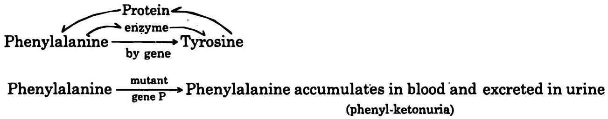
इस लक्षण का अध्ययन सबसे पहले सर आर्चीबाल्ड गैरड (Sir Archibald Garrod) ने किया था।
फिनाइलएलैनीन (phenylalanine) ऐमीनो अम्ल का उपयोग कई उपापचयी पथ (metabolic pathways) में होता है।
हर पथ में कई एन्जाइम भाग लेते हैं।
अगर कोई एक भी एन्जाइम न बने, तो वह पथ पूरा नहीं हो पाता और रोग हो जाता है।
इस अप्रभावी जीन के कारण फिनाइलएलैनीन से टायरोसीन (tyrosine) बनाने वाला जरूरी एन्जाइम नहीं बन पाता।
इसलिए रुधिर में फिनाइलएलैनीन की मात्रा बहुत बढ़ जाती है और यह मूत्र में भी निकलने लगती है।
इस अवस्था को फिनाइलकीटोन्यूरिया (phenylketonuria) या PKU कहते हैं।
ऐसे बच्चों में मस्तिष्क का विकास पूरा नहीं हो पाता।
इनका I.Q. स्तर सामान्यतः 20 से कम रहता है।